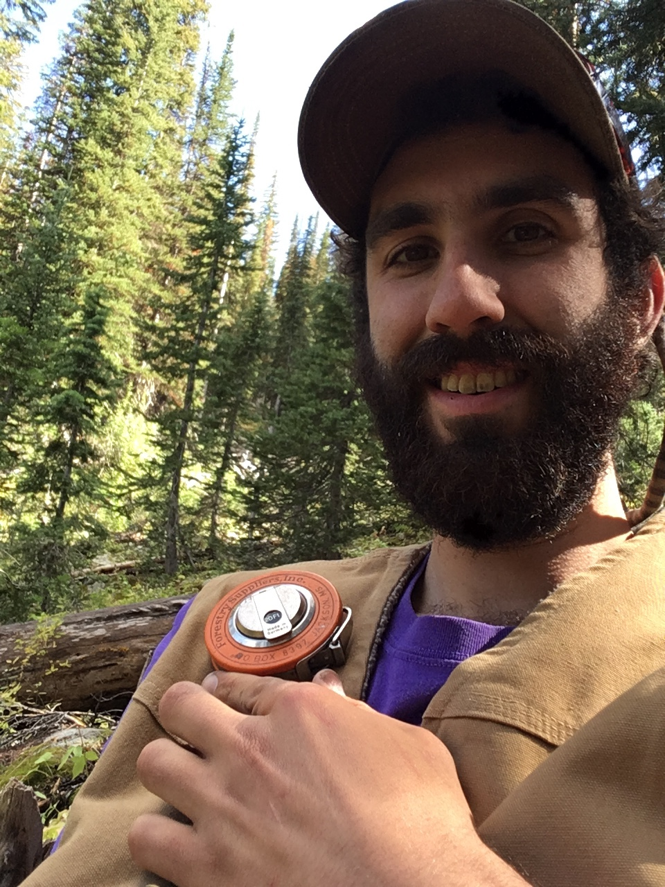

I have spent my life in reverence of the natural world. Growing up in the woods of central New York, I was fascinated by annual cycles, and enjoyed watching the way that nature adjusted to intense seasonal shifts there. Inspired to learn more about the fundamental processes that drives these cycles, I pursued a B.S. in Chemistry from the State University of New York at Geneseo. Following that, I intended to pursue a career in environmental science, but first took time to re-focus. In a gap year, I hiked the Pacific Crest Trail among other pursuits, searching for a way to connect my professional and personal interests.
I since received a PhD in Agricultural and Environmental Chemistry from the University of California, Davis, where I applied my knowledge of chemistry to study the impacts of climate change on water and carbon cycles in the forests of the Sierra Nevada, putting my research into the context of both conservation and management of natural resources. My work has brought attention to the under-appreciated role of soils in stabilizing the response of forests to climate change.
Following my PhD I accepted position as a Post-Doctoral Scholar in the Soil-Plant-Atmosphere lab at the University of Oregon, where my research focused on questions of scale in ecology. With support from professor Lucas Silva, I garnered funding from National Geographic to study the impact of soils on productivity over the past centuries in Oregon’s subalpine forests. The project sought to resolve the uncertainty between stresses experienced by individual trees, and how that is reflected by landscape scale processes. My work made fundamental observations about how trees respond to environmental change, leveraging trees and their history through growth rings as the protagonist in the story of landscape evolution.
After this pursuit, I moved to Boise, ID where I now reside. WIth this change in ecosystem and institution, I sought to apply my expertise as a soil biogeochemst and plant ecologist to assist with land management. At Boise State University I work with Professor Marie-Anne de Graaff to study fundamental processes in the sagebrush steppe that govern resistance to exotic plants, and the resilience of native plants after wildfires. My research is shaped by collaborations with the U.S. Geological survey, and their duty to serve land managers at the Idaho Department of Fish and Game and the Bureau of Land Management.
In my free time you’ll find me skiing, mountain biking, trail running, whitewater rafting and doing whatever I can to get outside and enjoy the fresh air!